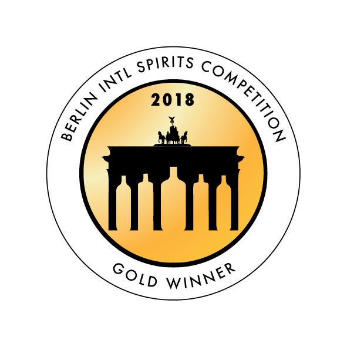
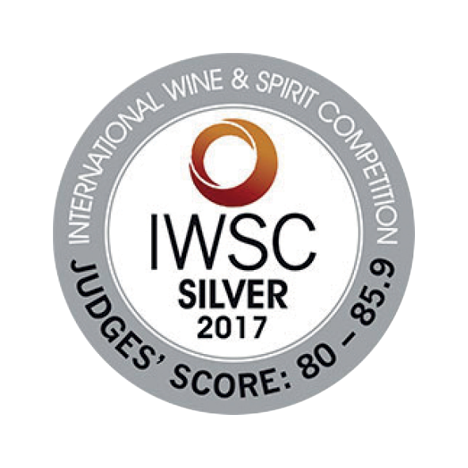
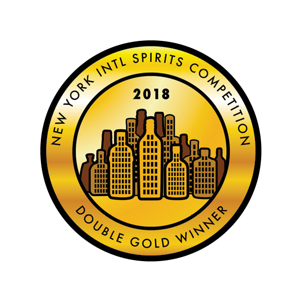
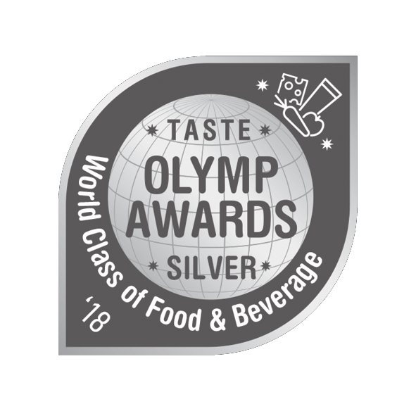

The “Chios Mastiha Liqueur Psychis Distilled 100% (P.G.I.)” is traditionally
produced in Chios by the Psychis distillery and is a distillation product from the authentic Chios
Mastic.
The founder of the “Psychis Traditional Distillery” distilled Mastic crystals, taking natural distillate and
created, after many efforts, the excellent “Chios Mastiha Liqueur Psychis Distilled 100% (P.G.I.)”, a
product with a Protected Geographical Indication (P.G.I.). The local tradition wants the “Chios Mastiha
Liqueur Psychis Distilled 100% (P.G.I.)” to be served accompanied by dessert, after every meal or with
coffee.
Today, the 4th generation, following the well-hidden family recipe (which is passed down from generation to
generation), is supplied the authentic mastic by the Chios Gum Mastic Growers Association, distilling it in
its traditional copper stills, creating the internationally acclaimed award-winning “Chios Mastiha Liqueur
Psychis Distilled 100% (P.G.I.)” which contains in its taste the whole history of the island.
The “Chios Mastiha Liqueur Psychis Distilled 100% (P.G.I.)” is an excellent choice for consumption in a shot
(try the frozen one) or in cocktails or even as an aperitif served in a columned glass with grated ice.
   
– – – – – – – – – – – – – – – –
{kind=link}
{kind=link}
{kind=link}
{kind=link}
{kind=link}
{kind=link}